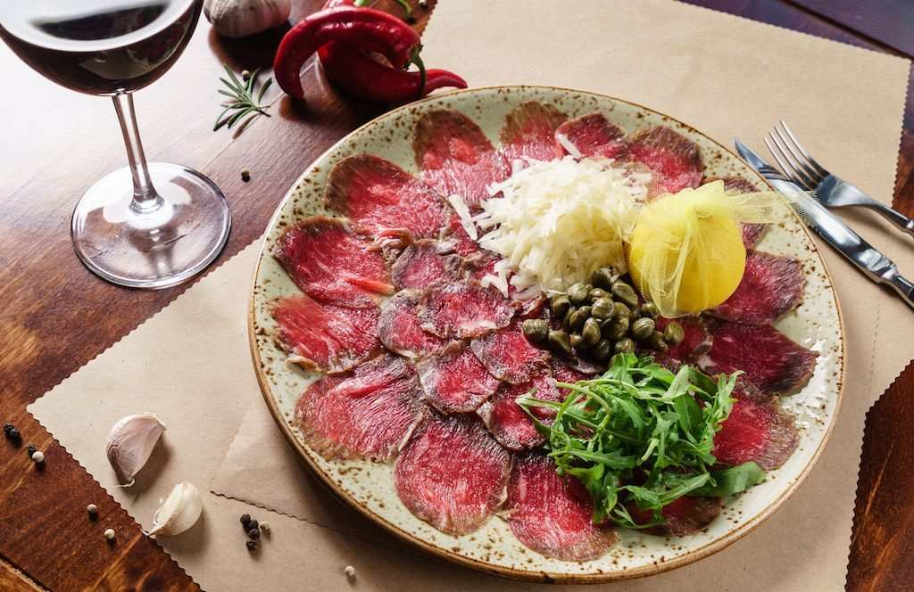

Ana Sayfa | Ürünlerimiz | Hakkımızda |

ÜRÜNLERİMİZ
BüyükUsta'nın özel lezzetleri
En keyifli anlarınıza eşlik edecek özel lezzetlerimiz yeni BigChefs menüsünde sizleri bekliyor. Zencefilli Acılı Karides, Miso Soslu Somon, Dana Carpaccio, Siyah Trüflü ve Beş Peynirli Ravioli,
Füme Domates Soslu ve Mascarpone Peynirli Fettuccine, Osso Buco, Osso Buco ve Domates Soslu Spaghetti ve Cızırdayan Dana Bonfile menümüzün özel lezzetlerini oluşturuyor.
ZENCEFİLLİ ACILI KARİDES
KAJU FISTIK İLE KIZARMIŞ KARİDESLER, ZENCEFİLLİ SEBZELİ SOS, SUSAM VE TAZE SOĞAN
IZGARA DANA BONFİLE

BROKOLİ GUACAMOLE, IZGARA SEBZELER VE JUS SOS
DANA CARPACCIO
BAHARAT KAPLI CARPACCİO, HARDAL SOSLU IZGARA ENGİNAR KALBİ, TRÜF MANTARI DİLİMLERİ, ROKA, PARMESAN PEYNİRİ VE TRÜF YAĞI
SİYAH TRÜFLÜ VE BEŞ PEYNİRLİ RAVIOLI

İSTİRİDYE MANTARI, PORÇİNİ MANTARI, KUŞKONMAZ, ENGİNAR KALBİ, TRÜF AROMASI VE SİYAH TRÜF MANTARI DİLİMLERİ
OSSO BUCO

AĞIR ATEŞTE PİŞMİŞ OSSO BUCO, FIRINLANMIŞ TAZE PATATES VE SARIMSAK KONFİT
CIZIRDAYAN DANA PİRZOLA

BAZLAMA EKMEK, TEREYAĞI VE KARAMELİZE SOĞANLI PATATES PÜRESİ
COMBO FAJITA
DANA BONFİLE VE TAVUK ETLİ